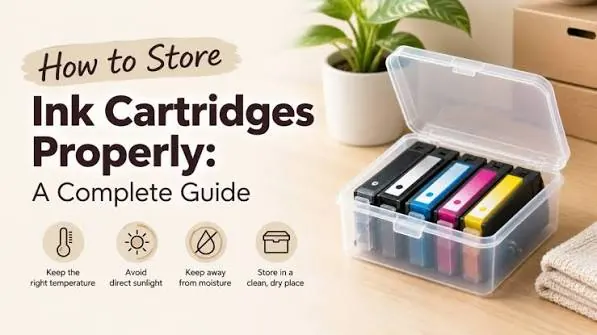

Printers
How to Store Ink and Toner Cartridges Properly
Protect printer ink and toner cartridges from heat, moisture, light, and damage. Learn safe storage, handling, shelf-life checks, and when to replace supplies.
Why Correct Cartridge Storage Matters
Printer cartridges contain sensitive materials. Ink is a liquid which needs to flow through small channels and toner is a fine powder which has been designed to act in a controlled manner. They can be prone to leaking, drying out, clumping together and damage to the packaging. Therefore storing your cartridges in the right conditions can save you losing money on spare cartridges, and reduce the chances of an unexpected printing disruption.
Different manufacturers will have varying conditions to store your cartridges. The best practice would be to follow what is written on the packaging or manual. Some cartridges may have different storage conditions depending on the printer family they are designed for.

Store in Original Packaging
Ideally, keep your spare cartridges in their original box and bag. Packaging has been specifically designed to keep your cartridge safe from light, dust, impact and sensitive areas. There may be seals to stop the ink from drying out and toner escaping. The covers should not be removed until you are ready to fit them.
Leave the label showing so you can easily see the cartridge number, colour, compatible printer and date information. If you have multiple models in your business, store them by printer family and colour. This will reduce the risk of fitting a cartridge that isn’t compatible with your printer during busy times.
Cool, Dry & Stable Environment
Keep in a clean, stable environment indoors. Do not expose to direct sunlight, radiators, heaters or any heat. Too much heat can cause issues with the ink and packaging. Avoid damp areas such as areas prone to leaking, condensation and high humidity. This can cause damage to the packaging and could potentially effect the cartridge.
Avoid leaving your cartridges in a vehicle for long periods of time. Especially if it is very hot or cold outside. The temperatures can vary dramatically. Instead it is usually better to store in a cupboard or shelving unit in a normal indoor environment. Ensure it is dry, clean and has a temperature within the manufacturers guidelines.

Correct Storage Orientation for Ink Cartridges
Some ink cartridges require to be stored in a specific orientation. Follow the arrows or instructions given on the packaging. This will ensure that the ink doesn’t flow into areas it shouldn’t. Avoid shaking, squeezing or dropping.
Don’t open up your cartridge. Some ink systems can be affected by being exposed to air. The cartridge should be kept sealed until you are ready to fit. If it has been opened, follow the guidelines of the manufacturer. Don’t assume that sealing with household tape will protect it.
Toner
Toner is a fine powder. Keep the cartridge sealed and avoid any unnecessary movement, impact or shaking. Follow the instructions given on the packaging. Don’t open up the casing or try to move the toner into a different container. The fine toner can easily spread so follow the safety guidelines given by the manufacturer.
If there has been a spillage, don’t blow it away or use a regular household vacuum (unless manufacturer says it’s acceptable). Follow the cleaning guidelines given with the product and ensure good ventilation. Don’t touch the imaging surface inside the drum cartridge as this can affect the print quality.
Expiry Dates
Some ink cartridges have an expiry date printed on them or a recommended use by date. Other cartridges can use a warranty or date of manufacture to help determine if it is still suitable. Always look at the label and the product information. Unopened cartridges may have a longer shelf life if stored correctly. Whereas opened or used cartridges may have a shorter shelf life.
Always follow a first in first out system. Fit older compatible cartridges first. Take note of the dates you purchased your supplies. If your cartridge has gone past the date stated, check the manufacturers policies before fitting. Especially if your printer is used for important documents.
Avoid Dust, Liquids and Impact
Find a shelf or cabinet to place your cartridges in. Avoid crushing them by placing them under boxes, or knocking them. Avoid exposing them to any cleaning products. Keep liquids and food away from the cartridges. Dust can gather around areas of the packaging. If there are no covers on the cartridge this could get inside. Avoid placing heavy objects on top of boxes.
Small businesses can use labelled storage boxes. Keep your inkjet cartridges, toner cartridges, drums and maintenance kits separate. Keep incompatible products separate and label the boxes with the printer models they are compatible with. Keep a simple spreadsheet to track how many you have, the cartridge number, purchase date and expiry date.
Before Fitting
Check the outside of the packaging for any holes, leaks, squashed corners and moisture. If the cartridge has been exposed to a different temperature, let it sit in its sealed packaging until it reaches the usual room temperature. Follow manufacturer guidelines. This will reduce condensation forming on a cold cartridge in warm conditions.
Follow the fitting instructions. Only remove the seals and covers as instructed. Don’t touch any electrical parts, nozzles or imaging areas. Place the cartridge in the correct orientation and close the access cover gently. If required, run the recommended setup/alignment process.
Storing Spare Cartridges in a Small Office
Having 1 spare set of essentials can reduce downtime. However, having too many cartridges can cause them to go out of date. Use previous months to estimate how much you will need. Consider seasonal demand. If your business prints a lot during tax, admissions or promotional periods you may need more stock than someone who prints consistent amounts every month.
Assign someone to check stock levels and order new stock. Purchase from trusted sellers. Double check the exact cartridge code. Keep proof of purchase along with warranty information. If the cartridge has been damaged upon delivery, contact the seller/manufacturer quickly. Keep the packaging.
Conclusion
Cartridges can be easily stored by keeping them sealed in original packaging, in a cool dry environment and protecting them from sunlight and impact. Follow manufacturer guidelines for orientation and temperature. Keep track of dates and stock. Handle toner and ink carefully. Check cartridges before fitting. This will help keep your print quality, reduce waste and keep your office ready for your next print job..
Need a hand with your printer or laptop?
Printerworld sells printers, laptops and genuine supplies, and repairs and services both. Bring in your model number and we will help you get it right.